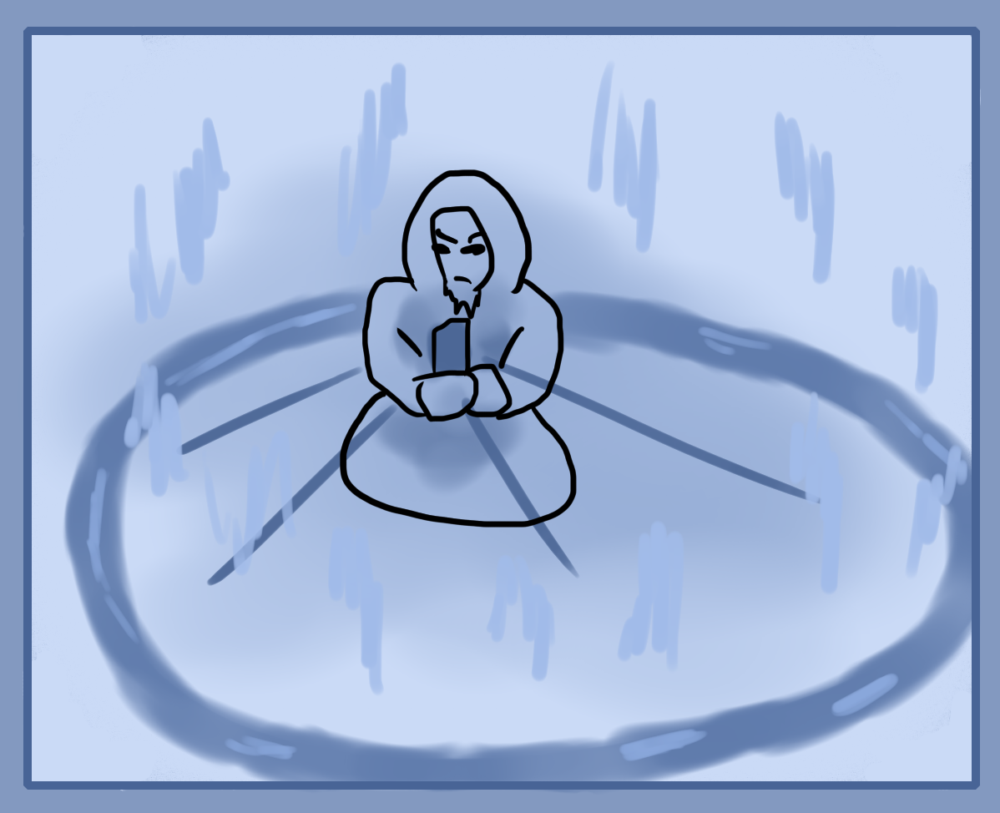

Talismans can hold spells, be used to activate spells, as well as be the source of a spell. Examples are to place one on a door as a protection spell.
So essentially they're batteries or marking places for spells. Instead of rethinking and activating a spell internally you can draw it on a talisman, target the talisman and energeize it to activate the spell.
Talisman Practice
Cut out a piece of paper around 2.5 inches(6.5cm) wide and 4.5(11.5cm) inches long. Either draw a symbol that represents the current exercise or make a universal talisman if you're more experienced along with some text like "Up Talisman" or "Cold Talisman". The color of paper and paint does not matter but can aid to make a stronger magical effect if you work better off physical object magic.
Now it's time to create both a basic spell and link it to your talisman. The first set of spells that we're going to use is an energy raising spell which locates your room and pulls energetically upward and also downwards.
First get your upwards pressure talisman made up, Name it "Upward Talisman" with an upward arrow or something similar. Next, hold your talisman in both hands or one hand and energize it, feel and focus on it either mentally or by connecting your bodies energy to it. Use the talisman as your energetic center by making it a mental anchor for the spell. Once that is stable, expand your focus from the talisman while still keeping it as the anchor point to your whole room or space around you. Visualize a circle or square of light in the room to signify the space that you're using. Next, feel an upward mental pressure in your ring. This should all be subtle and you don't want to use too much force since we're simply just creating the "ghost" or design of your spell, not actually powering it up yet.
Once this is all done, lock it in mentally by remembering the whole spell and mentally intend that it is linked or inside the talisman.
So to summarise. Focus on the talisman, expand your focus out and cast a circle around your room on the ground, feel an upward force and "save" this whole mental image to the talisman.
Now try to energize the talisman and use it to bring the spell image or the spell "map" which is the spectral idea that you previously made. Use more mana and intensify the talismans and its spell. Feel and see if you can notice the upward pressure. Then stop energizing the talisman, the spell should continue for some time because of it's residue. The length and strength depends on your magical power. To manually stop it, project a circle around the room and use neutral magical force or feel out the upward pressure and neutralize it.
Practice this exercise lots to get a feel for it. You can think of it as a combination of all the previous exercises. If it is too difficult, re-practice the past exercises, try it again or keep reading and you will understand later on.
Practice makes perfect for this as you need to understand magic from a practical, real, experiential perspective.
Try this exercise again but instead of using upward pressure, use downward. Then, use an outward expanding force from the talisman centre. Magically create the centre from where it should expand outward from in your ritual. After this compress magical pressure into the centre. So the whole room draws in energy to this centre. After that, start using temperatures. Make it hotter then colder similar to the room energy exercise.
Feel free to try out any other idea you have or want to try. Do remember that depending on your skill and personal elemental alignment, not all ideas will work well.